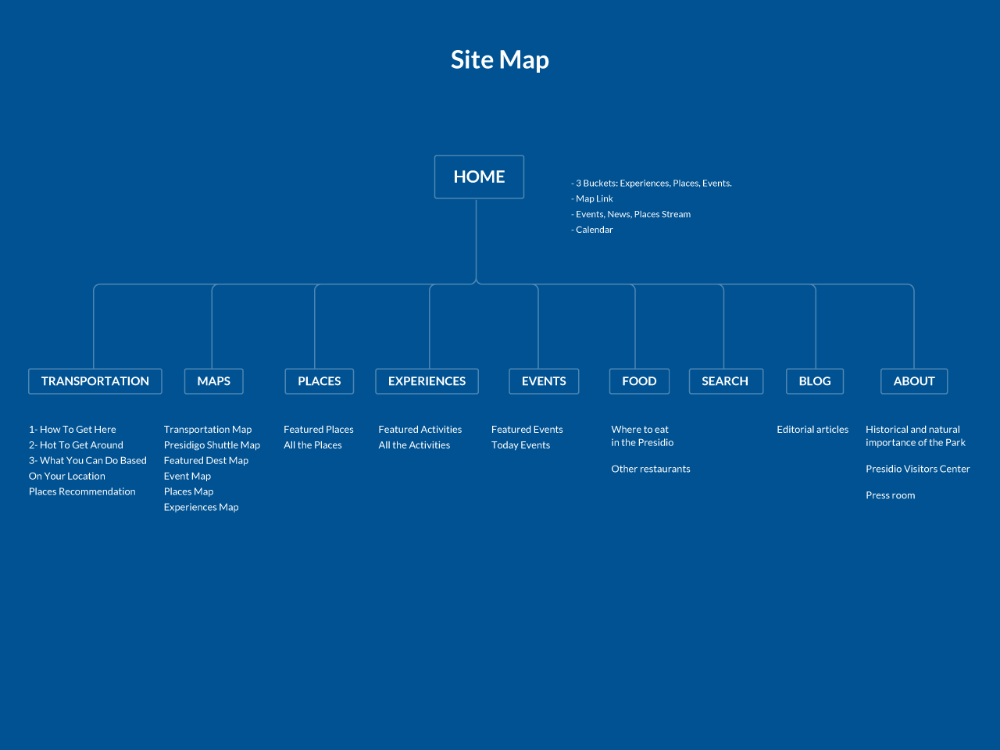
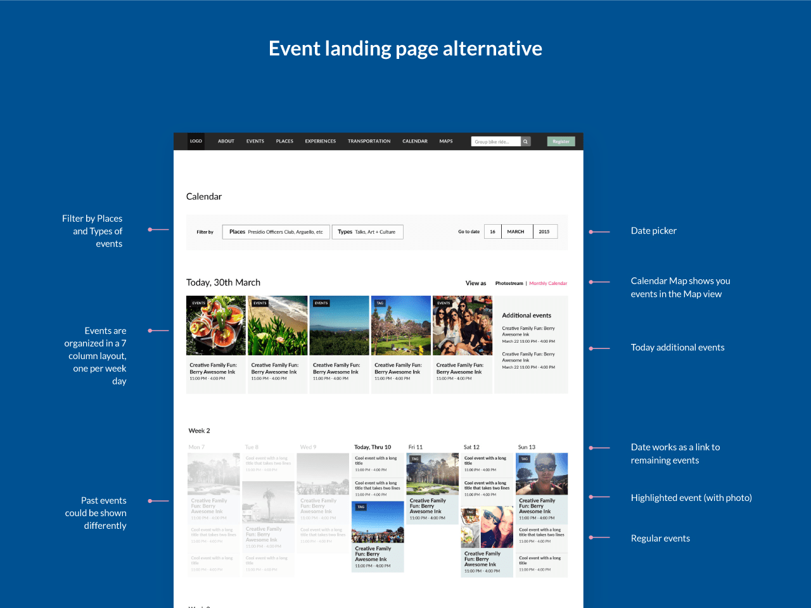
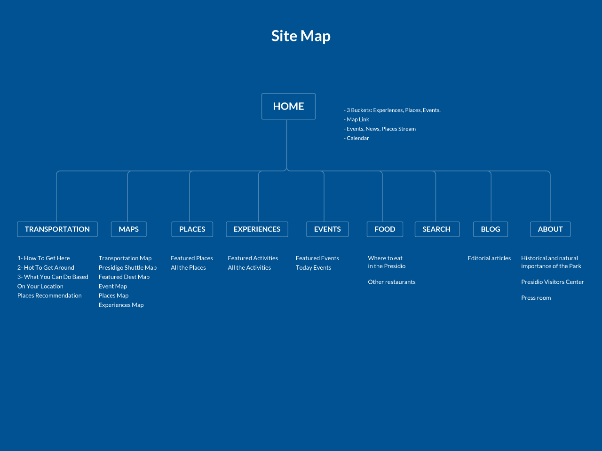
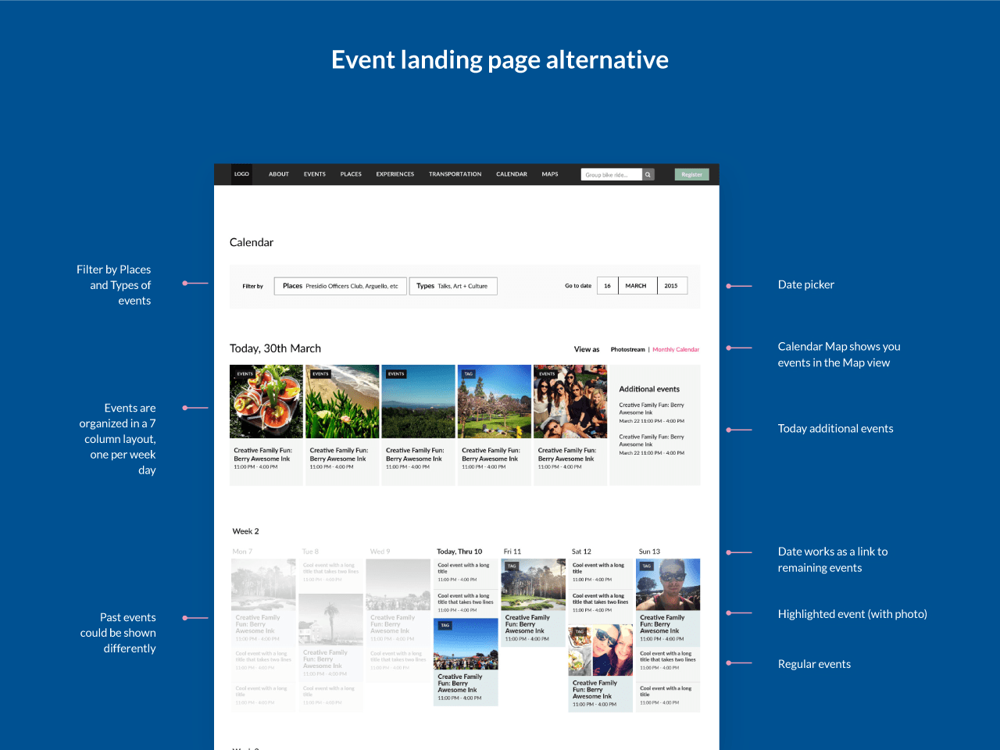
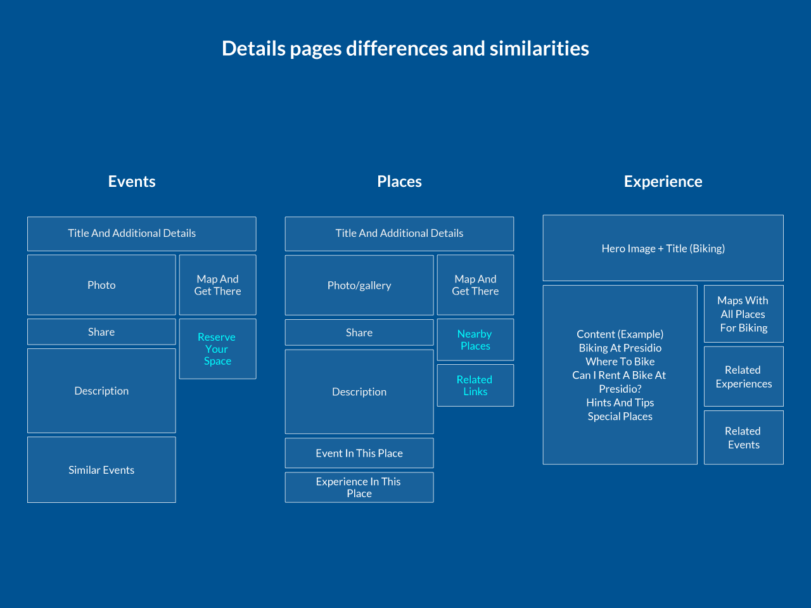
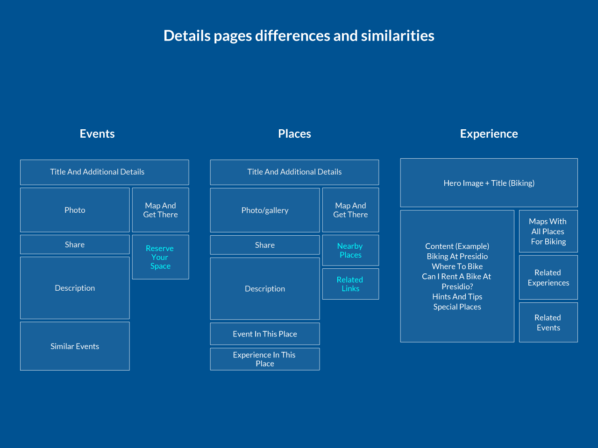

Presidio National Park
The Presidio of San Francisco is a national park in San Francisco, California which were looking to redesign their website.

The Presidio of San Francisco is a national park in San Francisco, California which were looking to redesign their website.
To redesign its digital strategy to make the park an attractive place to visit. Our main objectives were to increase lead generation and park visits.
Too complicated, cluttered with text, small images, information hard to find. Presidio is a lot of things and talked to too many actors: New users, returning users, educators and educators, people interested in real state, Need to simplify it.
- Solution: Card sorting was used to prioritize choices available and cut them down. A/B testing was performed with the two versions of the menu. In the “B” version. Big lists were only kept in Landing Pages were Presidio could make use of imaginery and copy to explain in a more organized way which were visitors options. .
- Results:Bounce rate of pages coming from the menu navigation was reduced. More users found what they were looking for. Heatmap also showed an increase in menu navigation use.
- Hypothesis: The original layout order doesnt help for conversion. Events is the most urgent kind of information so they need to go first.
- Results: Events attendance convertion rate was increased. Landing page bounce rate decreased probably because users realize quicker that they were new updated content to look at.
- Hypothesis: User are going to understand headlines easier and faster if they are written in a simpler language.
- Experiment: Improve mobile layout, simplify it by removing irrelevant elements and make courses easier to buy. Add button to save course as bookmark to check later and a notification badge to remind users when they use their desktop account.
- Fact: Bounce rate decreased in mobile and sharing events increased. But sales did not show a relevant increase.
- Conclusion: User survey showed that obvious always win. Simpler title like “Things to do” were prefered over “Experiences”.
- Hypothesis: Images with people attract more public than images showing a natural landscape with no one around, specially for events. A National Park can be a happy buzzing place to go. (Kid sells).
- Results: Click rates increased for events with those kinds of images. Client was advised to take results as a rule and instruct employees to choose images for events showing the park as a buzzy place.
- Fact: Even though Presidio events are free, they require users to reserve their seats. At first moment, price was included because they were simple no price at all.
- Hypothesis: Mentioning that events are free increases the click and conversion rate.
Suscription boxes different versions: Popups, notification at bottom, sticky dialog.
- Hypothesis: We can use Transportation large number of pageviews to redirect users to other sections of the website.
- Hypothesis: Mentioning that events are free increases the click and conversion rate.
Suscription boxes different versions: Popups, notification at bottom, sticky dialog.
 



 
